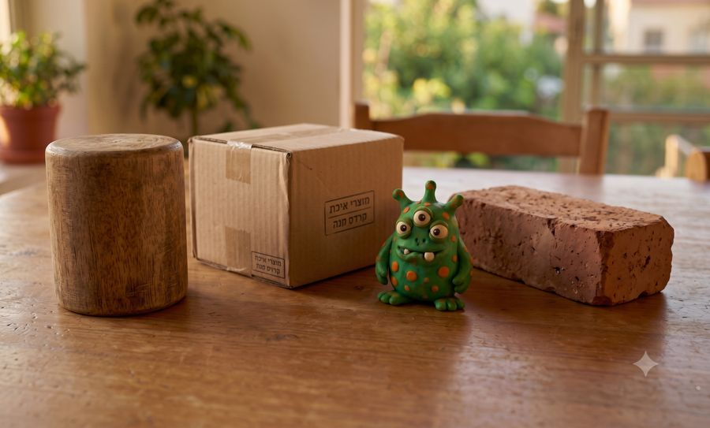
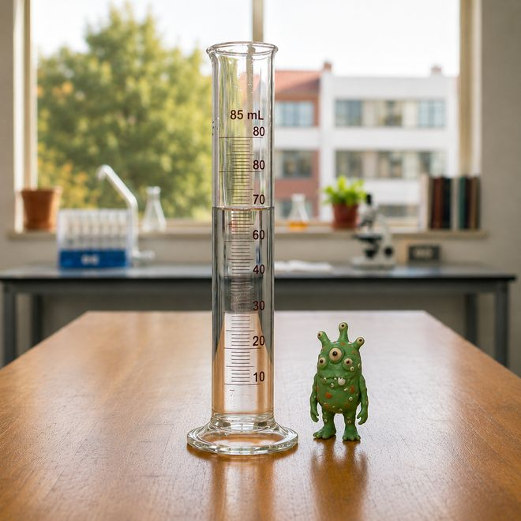
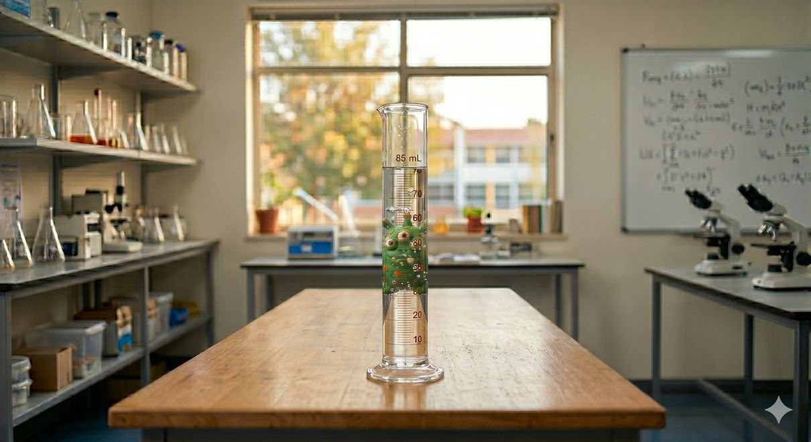

נפתור יחד כמה שאלות על מדידת נפח של מוצקים, צעד אחר צעד.

איזה מהגופים הבאים אינו בעל צורה הנדסית מוגדרת?
מי מהילדים צודק?
שירלי: "כדי למדוד נפח של גוף ללא צורה הנדסית מוגדרת יש להשתמש בשיטת דחיקת המים".
תום: "…יש להשתמש במאזניים וסרגל".
כשמודדים נפח בשיטת דחיקת המים משתמשים ב־___.
במפעל מתכות הכניסו גליל מתכת לכלי מלא במים למדידת נפחו בשיטת ההצפה. נפח המים שגלשו מהכלי היה 760 מ"ל. מה נפח הגליל?

תמונה א'
תמונה ב'בתמונה א' רואים את מפלס המים לפני שהכניסו בובת מפלצת, ובתמונה ב' אחרי. איזה אזור בתמונה ב' מראה שגובה המים עלה?
מעצבת תכשיטים הכניסה למשורה 3 חרוזים זהים. מפלס המים לפני: 100 מ"ל, אחרי: 130 מ"ל. מהו נפחו של חרוז אחד?